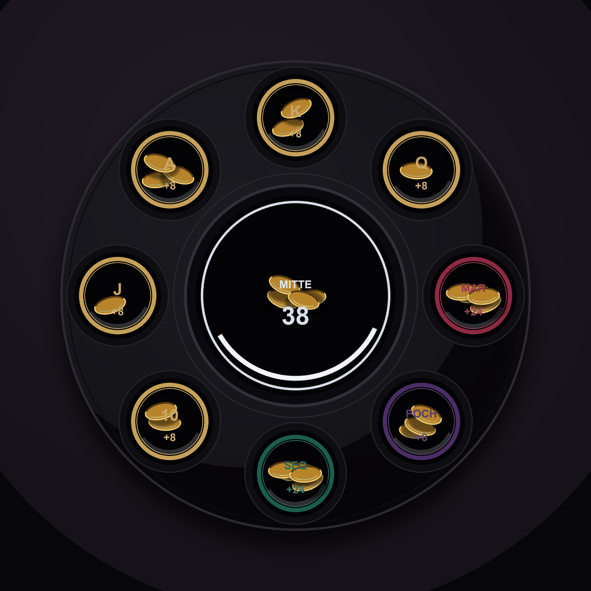

M9 · Pigment-Rim + Münzen
Kontrollierter Render nach PM8-Art-Direction: Farbe sitzt als Pigment-Rim am oberen Innenrand, Münzen liegen im dunklen Schalenraum. Labels und Werte sind Vektor/UI-Overlays.

Wichtig: Das ist kein finaler Asset-Stil, sondern ein spielbarer Material-/Geometrie-Test. Final würden die Münzen als Sprite/Particle-Layer und der Ring als SwiftUI/SpriteKit-Geometrie gebaut.